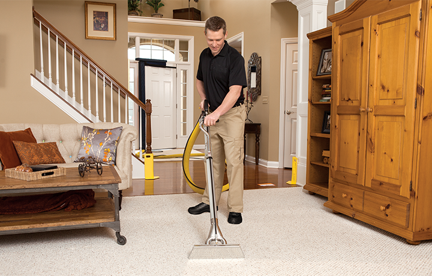

Carpet Cleaning Process
Our professional carpet cleaning service differs from other carpet cleaning companies because of our cleaning process. To clean your carpet, we use hot water extraction. Unlike other carpet cleaning methods, like carpet shampooing or dry cleaning, hot water extraction won’t damage your carpet fibers or leave behind any residue.
- Our team will start by inspecting the rooms you want to be cleaned. Then, we will move as much furniture as we can out of the way.
- We start cleaning by spot treating any areas that need extra attention.
- Then, we will use our patented carpet cleaning machines to deep clean. These machines pump hot water into your carpet to release any dirt deep within the fibers, then extract the water and remove the dirt. The powerful suction removes a significant amount of water so your carpet will dry within just hours.
- Finally, we will inspect your carpet with you to ensure you are happy with your clean carpet.
Upholstery Cleaning Process

- Our upholstery cleaning process begins with our technicians thoroughly inspecting your furniture. They will look at the fabric type, color and age of the furniture to determine the best approach.
- Then, they will then spot treat any areas on your couches and chairs that look like they need extra attention.
- After spot treating, the deep cleaning begins. We use our hot water extraction cleaning process. Our upholstery cleaning machine injects hot water and our cleaning solution into the furniture to release dirt deep within the upholstery. Then, it extracts the water to remove the dirt.
- Your upholstery will be dry within just hours.
Hardwood Cleaning Process
Vacuums and brooms do not remove all of the dirt and debris on your floors and mopping tends to spread dirt around your floor, without removing it. That’s why it’s important to have to your hardwood floors professionally cleaned.
- Our technicians will begin by doing a thorough inspection of your hardwood floor. They will determine what type of hardwood it is so that they use the best cleaning method.
- Once the type of flooring is determined, our technicians will move as much furniture as they can and vacuum the entire area with our truck mounted vacuum system. After all of the dry soil is removed, the deep cleaning begins.
- Our technicians use our hardwood floor auto scrubber to deep clean your floors. This cleaning machine uses our patented wood floor cleaner and hot water to remove as much dirt as possible.
- After the technician is done cleaning, they will dry the area with a microfiber mop, so your floors can be walked on immediately.